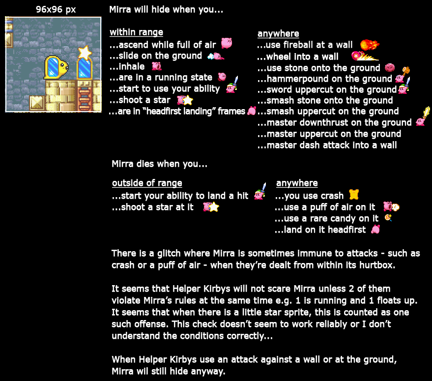

Meta Knight (? ? ?)
Meta Knight is one of the more difficult and luck based segments which is why it is the second segment in this route. The first part of the Meta Knight split involves you unlocking a lot of switches to backtrack to those locations later to save time in future segments. This segment has mostly easy rooms with a couple really difficult ones.
Advanced burning spike maze strat

This strat is very difficult and I don't recommend going for this if you are a beginner. If you play on emulator I recommend testing this out using the practice cart or savestates.
Advanced Gordo room strat

The Gordo will not spawn until you are on the left side of the screen at a certain height, so I like to spawn it right next to the Blade Knight. This ensures that the Gordo is always in a position that is easy to avoid.
Radish Ruins
Radish ruins overall is a difficult segment of the run. Your goal is to make it right to the end to fight Meta Knight while keeping wheel as long as possible
About Mirras
Regarding the Mirra guarding the deep Radish Ruins switch. Make sure you do not run before activating wheel. This will cause the Mirra to hide from Kirby and you must reset room before trying again. For more information on how Mirras work, check the image below.
Mirra information provided by Mugg1991 on tasvideos.org
Meta Knight Fight
One important thing to note is that there is a much larger chance Meta Knight will do a jumping stab if you do the sliding attack into him which is a good way to prevent blocking. Quickly time an air attack right after the slide hits to deal even more damage. One other thing is if you feel like you are in an unsafe spot, final cutters (UP+B) is a much safer attack than the neutral attack, however does less damage.